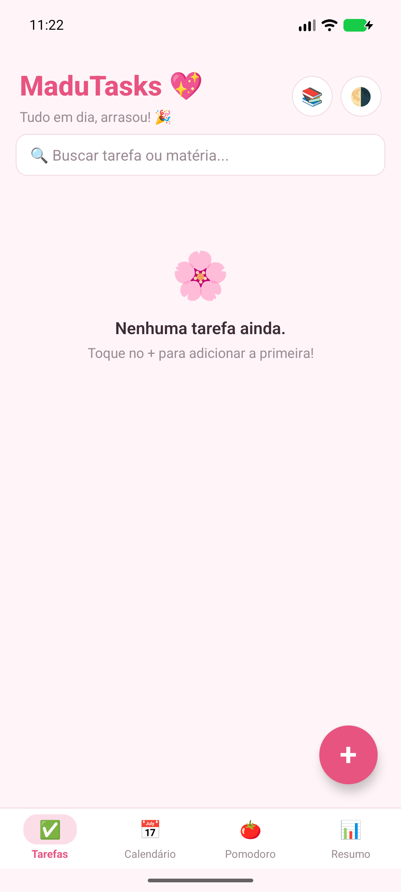
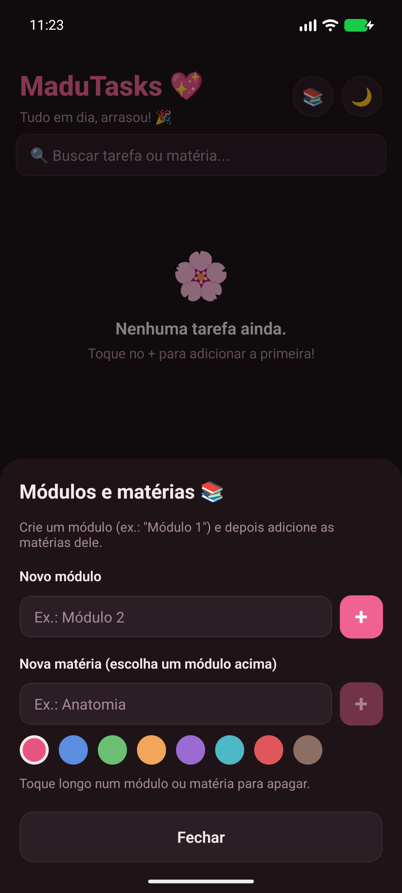
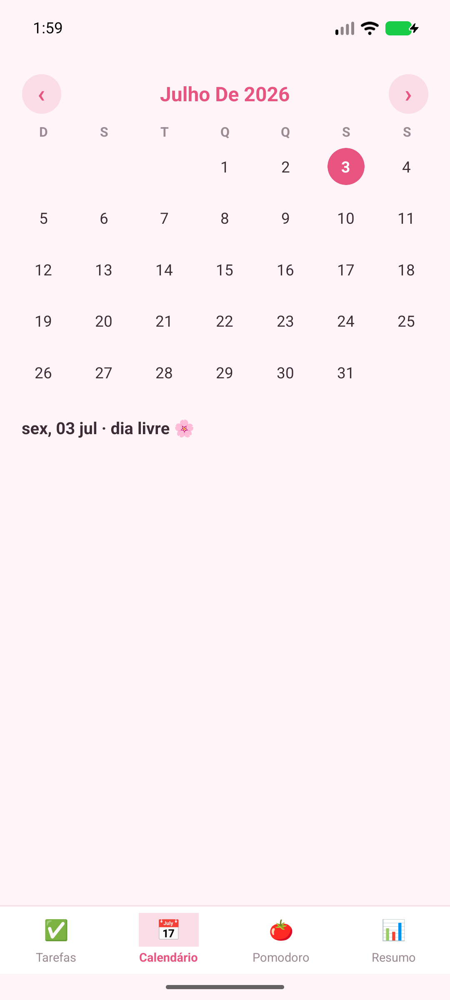
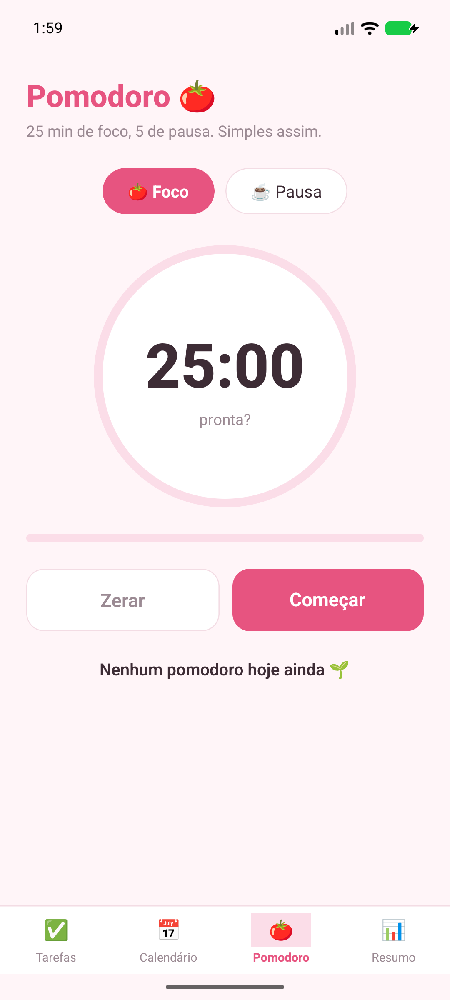
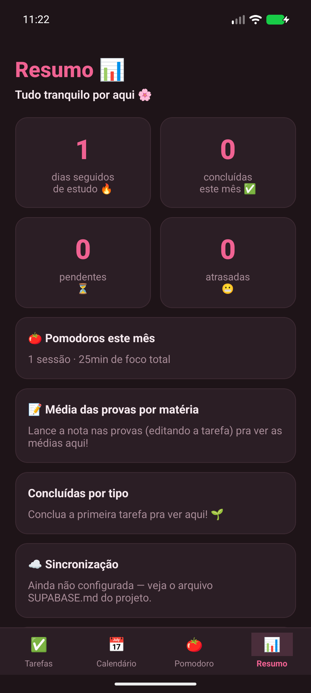
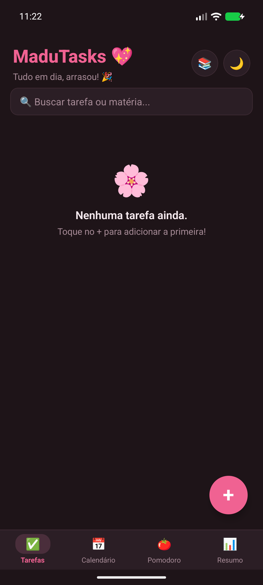

Provas, trabalhos e entregas num lugar só, bonito e simples. Você anota, o MaduTasks avisa na hora certa e mostra como andam seus estudos.

Um passeio rápido pelo app: cadastrar uma prova, receber o aviso, usar o Pomodoro e acompanhar o resumo.
Três passos, sem planilha e sem bloco de notas.
Crie módulos e matérias e escolha uma cor para cada uma. Tudo fica organizado desde o começo.
Toque no +, escolha o tipo, o prazo e quando quer ser lembrada: na hora, 1 hora, 1 dia ou 3 dias antes.
Conclua com um toque, use o Pomodoro e veja no Resumo quantas tarefas fez e quantos dias seguidos estudou.
Crie um módulo, adicione as matérias dele e escolha entre 8 cores. Nos cards e no calendário, você bate o olho e já sabe de qual matéria é.

Veja os dias com provas e entregas marcados com a cor da matéria. Toque num dia para ver o que tem nele.

25 minutos de foco e 5 de pausa, do jeito clássico. Dá para ajustar os tempos, e o app avisa quando o ciclo termina, mesmo em segundo plano.

Concluídas, pendentes, atrasadas e a sequência de dias estudando. Lançou a nota de uma prova? O app calcula a média por matéria.

Avisos que funcionam com o app fechado e sem internet.
Prova, trabalho ou tarefa, cada um com sua cor e prazo.
Tarefas que se repetem toda semana, sem precisar recriar.
Automático, de acordo com o celular, ou o que você preferir.
Exporte e importe seus dados num arquivo, quando quiser.
Mantenha celular e tablet iguais, se você ativar.
Prints reais do MaduTasks.

Tudo é guardado num banco dentro do seu celular, e o app funciona sem internet. A nuvem só entra se você quiser sincronizar com outro aparelho.
Disponível para Android, em APK. Instale, crie suas matérias e lance a primeira prova.